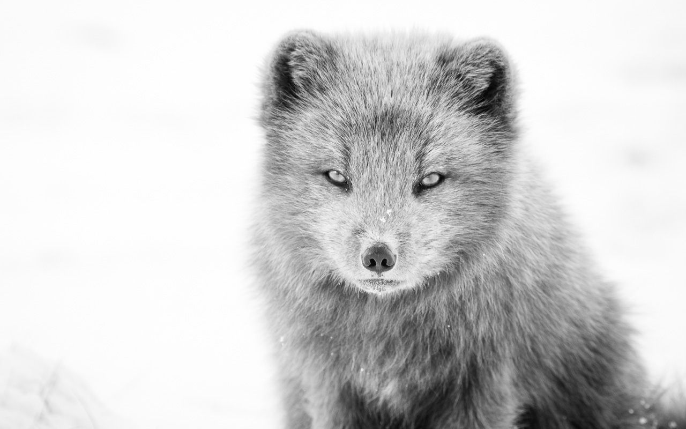

At that time there were many blank spaces on earth and when he saw one on a map that looked particularly inviting, he'd put his finger on it and say, 'when i grow up I will go there.' But one was special, the biggest, the most blank. And so in time, he went.
The reaches opened before him and closed behind, as if the desert had stepped across the sky to bar the way for his return, so he pushed deeper and deeper in tho the heart of darkness. Nothing can convey that dream sensation, that mingling of absurdity, surprise, and bewilderment into one cold tremor. That notion of being captured by the incredible which is the very essence of dreams. It had closed around him, all of that mysterious life of the wilderness that stirs in the desert, in the mountains, in the hearts of wild men. He had to live in the midst of the incomprehensible. In this massive darkness we survive in the flicker of a distant fire. The broadening waters flowed through wooded islands, and he lost his way in those woods, as one would in the desert, till he thought himself bewitched and cut off forever from everything he had known.
“That notion of being captured by the incredible which is the very essence of dreams. It had closed around him, all of that mysterious life of the wilderness that stirs in the desert, in the mountains, in the hearts of wild men. He had to live in the midst of the incomprehensible."
What becomes of a man when he goes up country? Where dark things seem to stir? The patient wilderness closed around him as the sea closes over a diver. He seemed at once to be transported to a lightless region of subtle horrors. Going up that river was like traveling back to the earliest beginnings of the world. When vegetation rioted on the earth, and big trees were kings. He was man enough to face the darkness. And so he went a little further, then a little further still until he had gone so far that he didn't' know how he would ever get back.

Frozen in time. Land that churned and bubbled past the dinosaur's hour and the unending split of the amoeba. The original and eternal. There was a dim suspicion of meaning in those branches that he, so removed from the dawn of time, could barely comprehend. But time is the fire in which we burn. We are but a fleeting moment. A footprint at the edge of the rising tide. The rest of the world was nowhere, swept away, whiteout leaving whisper of a shadow behind. The land had taken him, cradled him, gotten into his veins, consumed his flesh. It had sealed his soul to its own by the inconceivable ceremonies of some crude initiation.
And yet, it seemed to throw a bright kind of light. For he alone had made that last stride, he alone had stepped over the edge. And perhaps that is the whole difference: perhaps all the wisdom, all the truth, and all sincerity are just compressed in that inappreciable moment of time in which we step over the threshold of the invisible and into the incredible which is the very essence of dreams. And outside, the silent wilderness surrounding this speck on the earth was something great and invincible, like evil, or truth, waiting patiently for the passing away of this fantastic invasion. It is an enigma, there before us -- frowning, inviting, grand, mean, insipid, or savage, and always mute, with an air of whispering, 'come, and find out.' How can you imagine to what primal regions a man's unbound feet may take him into, by way of solitude?
“And perhaps that is the whole difference: perhaps all the wisdom, all the truth, and all sincerity are just compressed in that inappreciable moment of time in which we step over the threshold of the invisible and into the incredible which is the very essence of dreams."
Solitude -- this little thing makes all the great difference. When all else is gone you must fall back upon your innate strength, upon your own capacity for faithfulness. Indeed, he wanted nothing from the wilderness but space to breathe in, and space to push on through. The possession of this modest and clear flame seemed to have consumed all thought of self so completely that in the moment he was talking to you, you forgot that it was he -- the man before your eyes who had gone through these things. Waiting patiently."